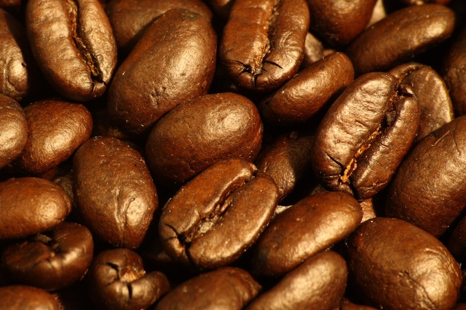
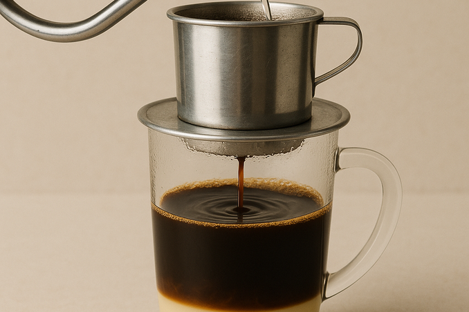
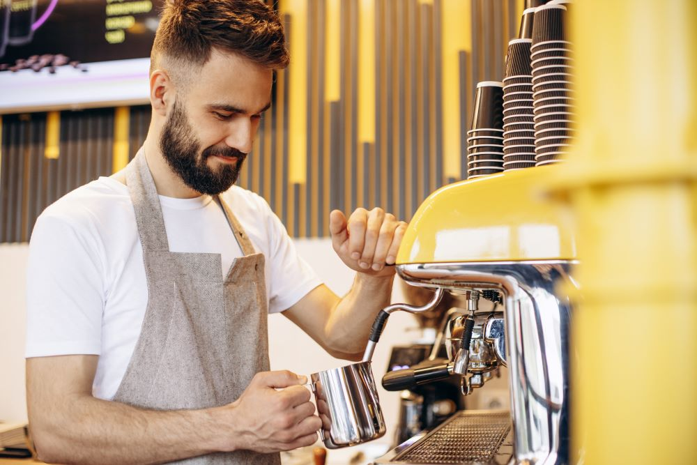

"Friss pörkölésű kávé, amely minden kortyban életre kel. Válogatott, magas hegyi ültetvényekről származó szemek, gondosan pörkölve az igazi aromáért. Indítsd a napod egy csésze igazi minőséggel – mert a jó reggel egy jó kávéval kezdődik."
Nem akarsz lemaradni aktuális híreinkről?

Ébresztő aromák, sűrű, bársonyos textúra és pörkölt jegyek keveréke – ez a tökéletes csésze kávé, amely energiát ad, felfrissít, és minden reggelt különlegessé, melegséggel telivé, ígéretes nappá varázsol.

Ébresztő aromák, sűrű, bársonyos textúra és pörkölt jegyek keveréke – ez a tökéletes csésze kávé, amely energiát ad, felfrissít, és minden reggelt különlegessé, melegséggel telivé, ígéretes nappá varázsol.

Ébresztő aromák, sűrű, bársonyos textúra és pörkölt jegyek keveréke – ez a tökéletes csésze kávé, amely energiát ad, felfrissít, és minden reggelt különlegessé, melegséggel telivé, ígéretes nappá varázsol.
Rólunk

Szemelyzetünk a Caffeina szíve-lelke. Tapasztalt baristáink nem csupán kávét készítenek, hanem igazi élményt nyújtanak minden vendégnek. Csapatunk minden tagja szenvedélyesen szereti a szakmáját, folyamatosan képezi magát, és odafigyel a legapróbb részletekre is – a pörkölési fok kiválasztásától a tökéletes hab eléréséig. Barátságos, közvetlen hangulatot teremtünk, hogy mindenki otthon érezze magát nálunk, legyen szó egy gyors reggeli kávéról vagy egy hosszabb beszélgetésről egy csésze mellett. Hiszünk abban, hogy a jó kávé mögött mindig emberek állnak, akik szívvel-lélekkel dolgoznak azért, hogy a te napod egy kicsit jobban induljon.
Szemelyzetünk a Caffeina szíve-lelke. Tapasztalt baristáink nem csupán kávét készítenek, hanem igazi élményt nyújtanak minden vendégnek. Csapatunk minden tagja szenvedélyesen szereti a szakmáját, folyamatosan képezi magát, és odafigyel a legapróbb részletekre is – a pörkölési fok kiválasztásától a tökéletes hab eléréséig. Barátságos, közvetlen hangulatot teremtünk, hogy mindenki otthon érezze magát nálunk, legyen szó egy gyors reggeli kávéról vagy egy hosszabb beszélgetésről egy csésze mellett. Hiszünk abban, hogy a jó kávé mögött mindig emberek állnak, akik szívvel-lélekkel dolgoznak azért, hogy a te napod egy kicsit jobban induljon.